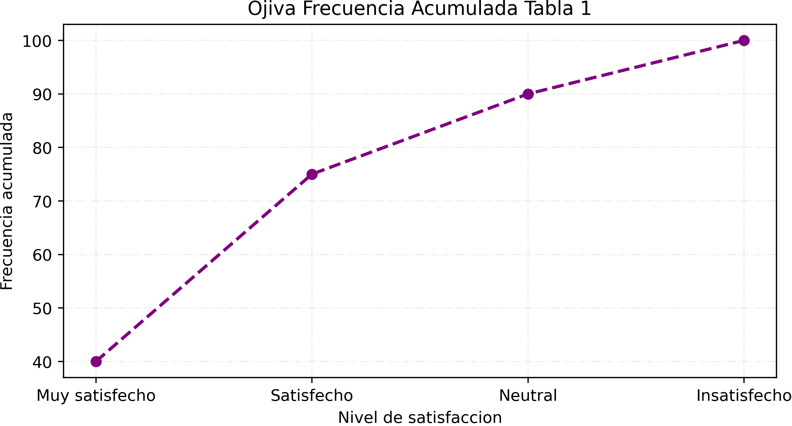
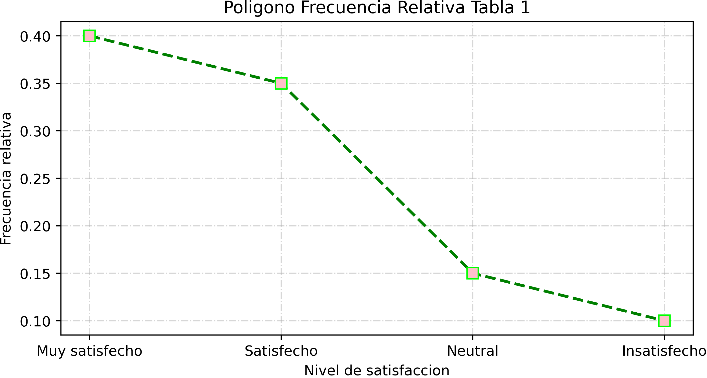
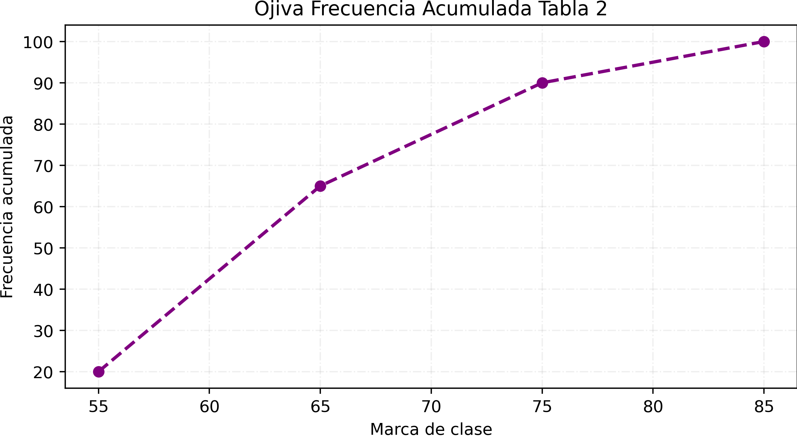
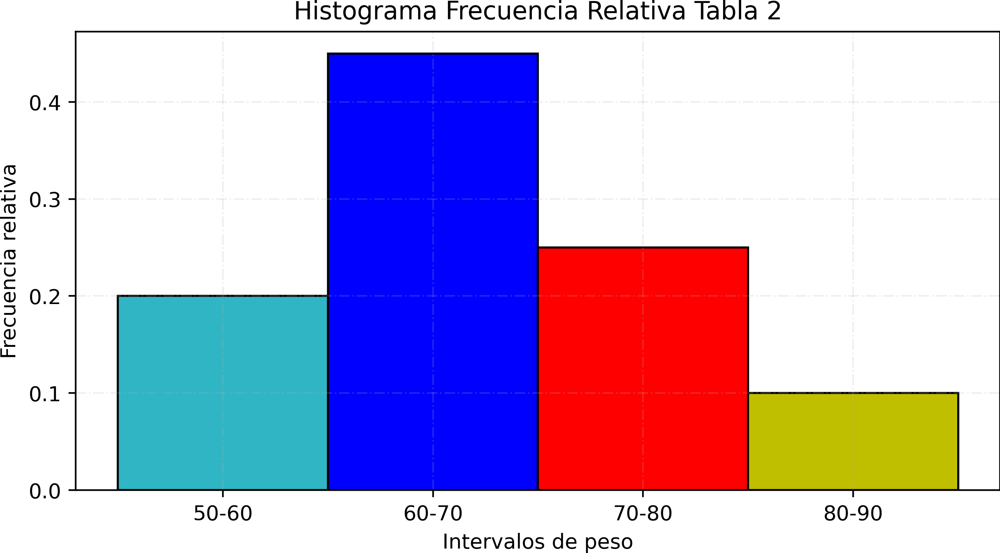
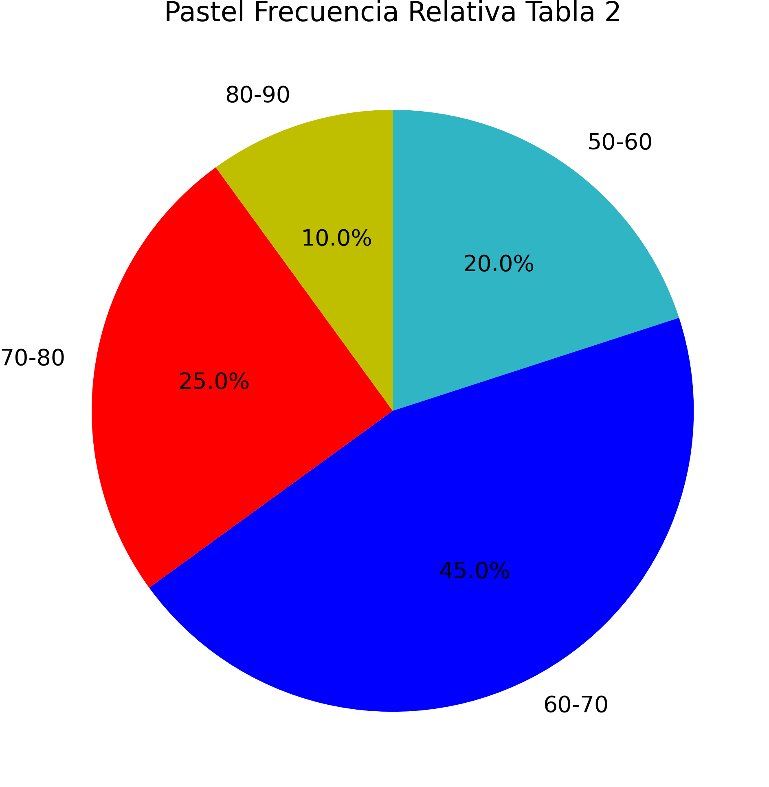
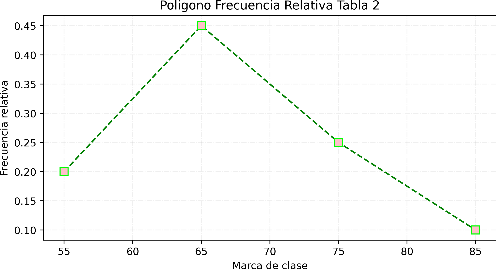
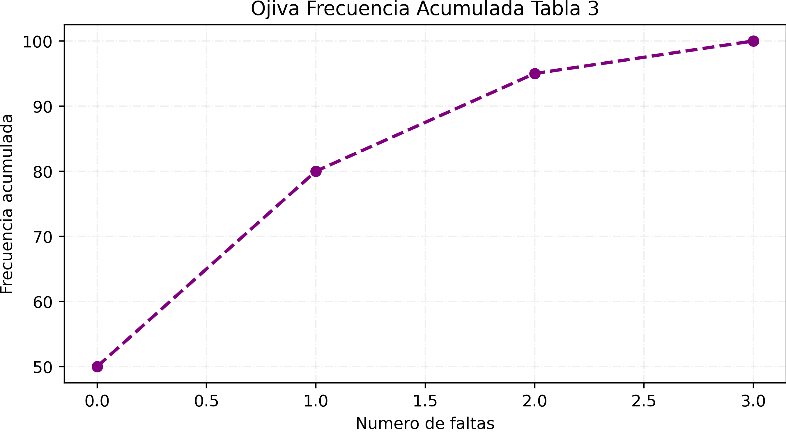
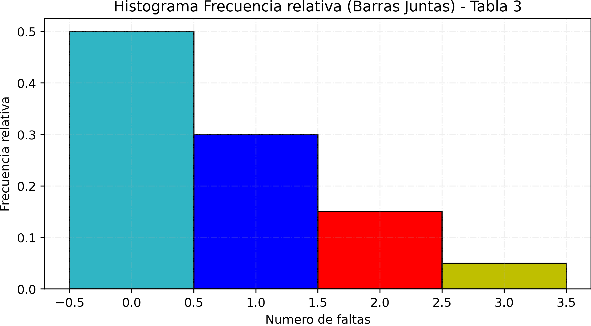
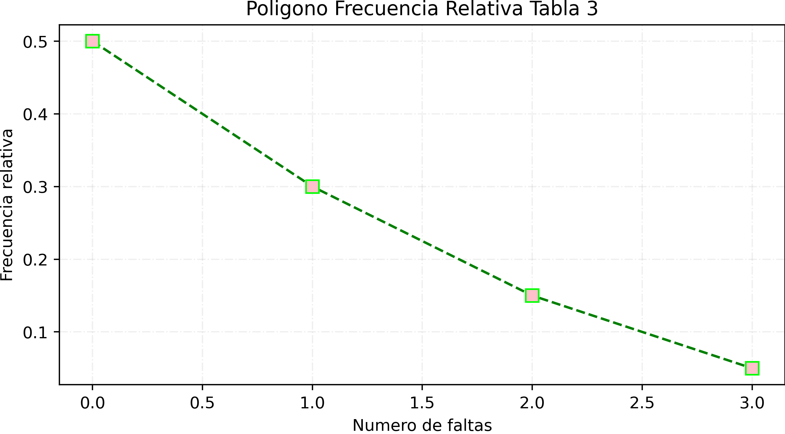

1. Variable Cualitativa: Nivel de Satisfacción
En la universidad hay diferentes acividades complementarias,
futboll, VEX, ajedrez y cursos, se hizo una encuesta ah diferentes
estudiantes a lo largo de el campus y se les pregunto que tan
satisfechos estan con su complementarias y de acuerdo a sus respuestas
estos fueron los datos recolectados
| Clase |
Frecuencia Absoluta (fi) |
Frecuencia Relativa (hi) |
Frecuencia Acumulada (Fi) |
| Muy satisfecho |
40 |
0.40 |
40 |
| Satisfecho |
35 |
0.35 |
75 |
| Neutral |
15 |
0.15 |
90 |
| Insatisfecho |
10 |
0.10 |
100 |
| Total |
100 |
1.00 |
100 |
1.1 - Evolución de Satisfacción

1.2 - Histograma de Satisfacción

1.3 - Barras Horizontales de Satisfacción

1.4 - Distribución de Satisfacción (%)
1.5 - Polígono de Frecuencias

2. Variable Cuantitativa Continua: Peso en kg
En un gym se hizo la dinamica de pesar a todos los fitness
para ver la gran variedad de peso desde los mas ponchados
y a los que solo se van a tomar fotos (yo)
| Clase |
Límite inferior |
Límite superior |
Marca de clase |
Frecuencia absoluta |
Frecuencia relativa |
Frecuencia acumulada |
| [50-60) |
50 |
60 |
55 |
20 |
0.20 |
20 |
| [60-70) |
60 |
70 |
65 |
45 |
0.45 |
65 |
| [70-80) |
70 |
80 |
75 |
25 |
0.25 |
90 |
| [80-90] |
80 |
90 |
85 |
10 |
0.10 |
100 |
| Total |
- |
- |
- |
100 |
1.00 |
- |
3.1 - Evolución de Peso

3.2 - Histograma de Peso

3.3 - Barras Horizontales de Peso

3.4 - Distribución de Peso (%)

3.5 - Polígono de Frecuencias

3. Variable Cuantitativa Discreta: Faltas al Mes
cuantas veces faltas a tus clases?
esto fue lo que se pregunto a estudiantes
de el bachillerato cbtis 83 muchos de estos estudiantes
dieron respuestas muy similares
| Clase |
Frecuencia Absoluta (fi) |
Frecuencia Relativa (hi) |
Frecuencia Acumulada (Fi) |
| 0 |
50 |
0.50 |
50 |
| 1 |
30 |
0.30 |
80 |
| 2 |
15 |
0.15 |
95 |
| 3 |
5 |
0.05 |
100 |
| Total |
100 |
1.00 |
100 |
2.1 - Evolución de Inasistencias

2.2 - Histograma de Faltas

2.3 - Barras Horizontales de Faltas

2.4 - Distribución de Faltas (%)

2.5 - Polígono de Frecuencias
